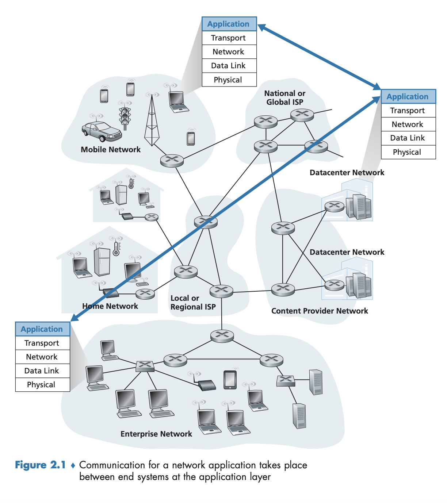
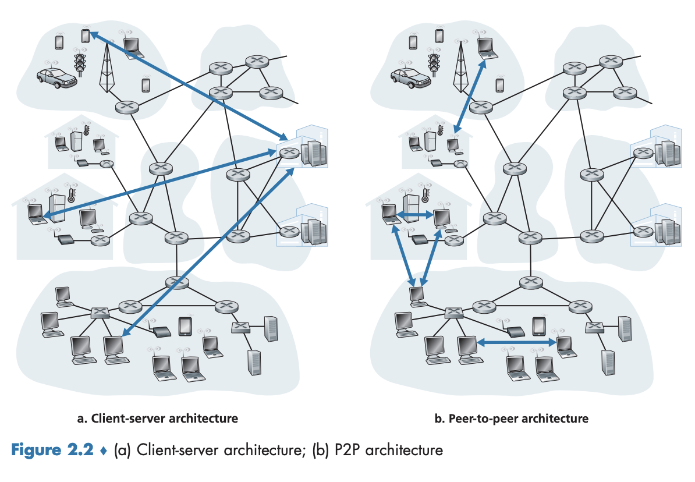
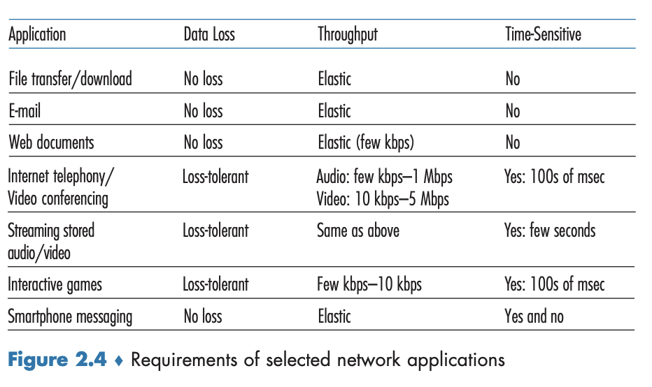
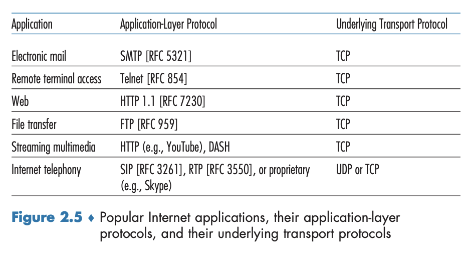

2.1 네트워크 애플리케이션의 원리
새로운 네트워크 애플리케이션을 위한 아이디어가 있다고 가정하자. 동기가 무엇이든지 간에 이제 이 아이디어를 실세계의 네트워크 애플리케이션으로 어떻게 변환하는지를 살펴볼 것이다.
네트워크 애플리케이션
- 개발의 중심: 다른 위치의 종단 시스템에서 동작하고 네트워크를 통해 서로 통신하는 프로그램을 작성하는 것
- 웹 애플리케이션에는 서로 통신하는 서버와 클라이언트로 구별되는 두 가지 프로그램이 있다.
- 클라이언트: 사용자의 호스트에서 실행되는 브라우저 프로그램
- 서버: 웹 서버 호스트에서 실행되는 웹 서버 프로그램
- 예시 - 넷플릭스 같은 온디맨드 비디오(Video on Demand, VoD) 애플리케이션
- 클라이언트: 사용자의 호스트에서 실행되는 넷플릭스 제공 프로그램
- 서버: 넷플릭스 서버 호스트에서 실행되는 넷플릭스 서버 프로그램
- 서버들은 그림 2.1에서 보듯이 종종 데이터 센터에 위치하게 된다. 
- 소프트웨어: 여러 종단 시스템에서 실행되게끔 작성해야 한다. → C, Java, Python 등으로 작성
- 중요한 점은, 네트워크 코어 장비를 위한 애플리케이션 소프트웨어를 개발할 필요는 없다.
- 장비는 네트워크 계층 및 그 하위 계층에서 기능하기 때문
2.1.1 네트워크 애플리케이션 구조
네트워크 구조와 애플리케이션 구조는 분명히 다르다는 점을 이해해야 한다.
- 네트워크 구조(애플리케이션 개발자 관점): 고정되어 있으며, 해당 애플리케이션에 특정 서비스 집합을 제공
- 애플리케이션 구조(application architecture): 애플리케이션 개발자가 설계하며, 애플리케이션이 다양한 종단 시스템에서 어떻게 조직되어야 하는지를 알려준다.
 그림 2.2처럼 애플리케이션 구조는 두 가지로 나눌 수 있다.
- 클라이언트-서버 구조(client-server architecture)
- P2P 구조(peer-to-peer architecture)
클라이언트-서버 구조(client-server architecture)
항상 동작하고 있는 호스트인
서버(server)와, 서버의 서비스를 제공받고 요청하는 다른 호스트인클라이언트(client)로 이루어진 구조
- 고전적인 예시: 클라이언트에서 실행되는 브라우저에서 웹 서버로 서비스를 요청하는 웹 애플리케이션
- 웹 서버가 클라이언트로부터 객체를 요청받으면, 요청된 객체를 클라이언트로 보내면서 응답한다.
- 클라이언트는 서로 직접적으로 통신하지는 않는다.
- 서버는 고정 IP 주소를 갖는다.
- 웹, 파일 전송, 원격 로그인, 전자메일 등이 여기서 속한다.
- 데이터 센터(data center): 수많은 호스트(보통 10만 개 정도의 서버)가 모여 있는 곳. 강력한 가상의 서버를 생성하는 역할을 수행한다.
- 하나의 호스트가 자신의 클라이언트으로부터 오는 모든 요청에 다 응답하는 것은 불가능하다.
- 검색 엔진(예: 구글, 빙, 바이두), 인터넷 상거래(예: 아마존, 이베이, 알리바바), 웹 기반 전자메일(예: 지메일, 야후메일), 소셜 미디어 네트워킹(예: 페이스북, 인스타그램, 트위터, 위챗)이 속한다.
- 서비스 제공자들은 데이터 센터로부터 데이터를 보내기 위해 상호연결과 대역폭에 합당한 비용을 지불해야 한다.
P2P 구조(peer-to-peer architecture)
항상 켜져 있는 인프라스트럭처 서버에 최소로 혹은 의존하지 않는 대신에
피어(peer)라는 간헐적으로 연결된 호스트 쌍이 서로 직접 통신하는 구조
- 피어는 서비스 제공자(service provider)가 소유하지 않는다. → 사용자들이 제어하는 데스크톱과 랩톱
- 예시로는 파일 공유 애플리케이션인 비트토렌트(BitTorrent)가 있다.
- 자가 확장성(self-scalability): P2P 구조의 가장 큰 특징.
- 파일 공유 애플리케이션에서는 각 피어들이 파일을 요구함으로써 작업 부하를 만들어내지만 또한 파일을 다른 피어들에게 분배함으로써 그 시스템에 서비스 능력을 추가한다.
- 비용 효율적인데, 상당한 서버 인프라스트럭처와 서버 대역폭을 요구하지 않기 때문이다.
- 고도의 분산 구조 특성으로 인해 보안, 성능, 신뢰성 면에서 커다란 도전을 맞이하고 있다.
2.1.2 프로세스 간 통신
프로세스(Process)
- 종단 시스템에서 실행되는 프로그램
- 운영체제 용어에서 실제 통신하는 것은 프로그램이 아니라 프로세스다.
- 통신 프로세스가 같은 종단 시스템에서 실행될 떄 그들은 서로 프로세스 간에 통신하며, 규칙은 종단 시스템의 운영체제에 의해 좌우된다. → 여기서는 다른 호스트에서 실행되는 프로세스와의 통신에 중점을 둠.
메시지(Message)
- 2개의 종단 시스템에서 서로 통신할 때 컴퓨터 네트워크로 주고 받는 것
- 송신 프로세스는 메시지를 만들어서 네트워크로 보내고 수신 프로세스는 메시지를 받고 역으로 메시지를 보냄으로써 응답한다.
그림 2.1은 다섯 계층의 프로세스 스택 중 애플리케이션 계층을 사용하여 프로세스가 통신하는 것을 보여준다.
클라이언트와 서버 프로세스
- 네트워크 애플리케이션은 네트워크에서 서로 메시지를 보내는 두 프로세스로 구성된다.
- 클라이언트 측의 프로세스
- 서버 측의 프로세스
- 클라이언트-서버 뿐만 아니라 P2P 구조에서도 가능하다. 각 호스트가 서버 또는 클라이언트 두 가지 모두 가능하기 떄문.
💡
두 프로세스 간의 통신 세션에서 통신을 초기화(다른 프로세스와 세션을 시작하려고 접속을 초기화)하는 프로세스를 클라이언트라 하고, 세션을 시작하기 위해 접속을 기다리는 프로세스를 서버라고 한다.
프로세스와 컴퓨터 네트워크 사이의 인터페이스
- 소켓(socket): 두 프로세스가 네트워크로 메시지를 서로 주고 받을 때, 반드시 통해야 하는 관문.
- 프로세스가 집(house)이면 소켓은 출입구(door)에 비유할 수 있다.
- 과정을 아래와 같이 정리할 수 있다.
- 프로세스가 메시지를 다른 호스트의 프로세스로 보내고 싶을 때, 그것은 출입구(소켓) 바깥 네트워크로 메시지를 밀어낸다.
- 이 송신 프로세스는 네트워크를 거쳐 목적지 프로세스의 출입구로 메시지를 보내기 위해 송신 프로세스의 출입구 뒤편에 전송 구조가 있다고 가정한다.
- 메시지가 목적지 호스트에 도착하면 메시지는 수신 프로세스의 출입구를 거치고 수신 프로세스는 메시지를 처리한다.

- 프로세스가 메시지를 다른 호스트의 프로세스로 보내고 싶을 때, 그것은 출입구(소켓) 바깥 네트워크로 메시지를 밀어낸다.
- 그림 2.3은 인터넷에서 통신하는 두 프로세스 사이의 소켓 통신(하위 전송 프로토콜은 TCP라고 가정)을 보여준다.
- 소켓은 호스트의 애플리케이션 계층과 트랜스포트 계층 간의 인터페이스이자, 애플리케이션과 네트워크 사이의 API(Application Programming Interface) 이다.
- 애플리케이션 개발자는 소켓의 애플리케이션 계층에 대한 모든 통제권을 갖지만, 소켓의 트랜스포트 계층에 대한 통제권은 거의 갖지 못한다. 가능한 것은 아래 두 가지 뿐이다.
- 트랜스포트 프로토콜의 선택
- 최대 버퍼와 최대 세그먼트 크기 같은 약간의 트랜스포트 계층 매개변수의 설정
프로세스 주소 배정
한 호스트상에서 수행되고 있는 프로세스가 패킷을 다른 호스트에서 수행되고 있는 프로세스로 패킷을 보내기 위해서는 수신 프로세스가 주소를 갖고 있을 필요가 있다. 수신 프로세스를 식별하기 위해서는 다음과 같은 두 가지 정보가 명시되어야 한다.
- 호스트의 주소 → IP 주소 로 식별된다.
- 그 목적지 호스트 내의 수신 프로세스를 명시하는 식별자 → 일반적으로 한 호스트가 많은 애플리케이션 애플리케이션을 수행할 수 있게 때문이며, 목적지 포트 번호(port number) 가 이 목적을 위해 사용된다.
- 인기 있는 애플리케이션은 특정 포트 번호가 할당된다.
- 웹 서버는 포트 번호 80번, (SMTP 프로토콜을 사용하는) 메일 서버는 포트 번호 25번
- 인터넷 표준 프로토콜들의 포트 번호 목록은 http://www/iana.org 에서 찾아볼 수 있다.
- 인기 있는 애플리케이션은 특정 포트 번호가 할당된다.
2.1.3 애플리케이션이 이용 가능한 트랜스포트 서비스
가능한 서비스들을 넓은 범위에서 네 가지 차원으로 분류할 수 있다.
- 신뢰적 데이터 전송
- 처리율
- 시간
- 보안
신뢰적 데이터 전송(reliable data transfer)
- 패킷들은 컴퓨터 네트워크 내에서 손실될 수 있다. → 라우터의 버퍼에서 오버플로, 패킷의 비트가 잘못되어 호스트 혹은 라우터에 의해 버려짐.
- 전자메일, 파일 전송, 원격 호스트 접속, 웹 문서 전송, 재무 애플리케이션에서 데이터 손실은 위험한 결과를 초래할 수 있다.
- 프로토콜이 보장된 데이터 전송 서비스를 제공한다면 신뢰적 데이터 전송(reliable data transfer) 을 제공한다고 한다.
- 송신 프로세스는 데이터를 소켓으로 보내고 그 데이터가 오류 없이 수신 프로세스에 도착할 것이라는 확신을 갖는다.
- 손실 허용 애플리케이션: 신뢰적 데이터 전송을 제공하지 않는 애플리케이션. 실시간 오디오/비디오, 저장 오디오/비디오 같은 멀티미디어 애플리케이션이 해당된다. → 손실 데이터로 오디오/비디오 품질에 영향을 줌.
처리율
- 네트워크 경로를 따라 두 프로세스 간의 통신 세션에서 송신 프로세스가 수신 프로세스로 비트를 전달할 수 있는 비율
- 가용한 처리율은 시간에 따라 변동하는데(세선들이 생겼다 없어졌다 하기 때문에), 이 관찰로 어느 명시된 속도에서 보장된 가용 처리율을 제공한다는 사실을 알 수 있다.
- 특정 처리율 요구사항을 갖는 애플리케이션은 대역폭 민감 애플리케이션(bandwidth-sensitive application) 이라고 한다.
- 애플리케이션이 $r$ 비트/초의 보장된 처리율을 요구하면 트랜스포트 프로토콜은 처리율이 항상 최소 $r$ bps 임을 보장해야 한다.
- 특정 처리율 요구사항이 없고 상황에 따라 처리율을 이용하는 애플리케이션을 탄력적 애플리케이션(elastic application) 이라고 한다.
- 전자메일, 파일 전송, 웹 전송 등이 해당되며 대역폭은 많으면 많을수록 좋다.
시간(timing guarantee)
- 인터넷 전화, 가상 환경, 원격회의(teleconferencing), 다자간 게임과 같은 실시간 상호작용 애플리케이션에서 요구되며, 시간 제한은 매우 엄격하다. 비실시간 애플리케이션은 종단 간 지연에 엄격하지 않으나 낮으면 낮을수록 좋다.
보안
- 트랜스포트 프로토콜은 애플리케이션에 하나 이상의 보안 서비스를 제공할 수 있다.
- 예를 들어, 송신 호스트에서 트랜스포트 프로토콜은 송신 프로세스가 전송하는 모든 데이터를 암호화할 수 있고 수신 호스트에서 트랜스포트 프로토콜은 그 데이터를 수신 프로세스로 전달하기 전에 데이터의 암호를 해독할 수 있다.
- 두 프로세스 사이에 기밀성(confidentially)을 제공한다.
- 그 외에는 무결성(integrity)과 종단 인증(authentocation) 등이 포함된다.
2.1.4 인터넷 전송 프로토콜이 제공하는 서비스
애플리케이션 개발자는 애플리케이션을 만들 때 전송 프로토콜을 선택할 수 있다. 프로토콜에 따라 각기 다른 서비스 모델을 제공한다.
- UDP(User Datagram Protocol)
- TCP(Transmission Control Protocol) 그림 2.4는 선택된 몇 가지 애플리케이션의 서비스 요구사항을 보여주고 있다. 
TCP 서비스
애플리케이션이 TCP 전송 프로토콜을 사용하면, 애플리케이션은 TCP로부터 이 두 가지 서비스를 받는다.
연결지향형 서비스: 애플리케이션 계층 메시지를 전송하기 전에 TCP는 클라이언트와 서버가 서로 전송 제어 정보를 교환하게 한다. 이 핸드셰이킹 과정이 클라이언트와 서버에 패킷이 곧 도달할 테니 준비하라고 알려주는 역할을 한다. 핸드셰이킹 단계를 지나면 TCP 연결 이 두 프로세스의 소켓 사이에 존재한다고 말한다. 이 연결은 두 프로세스가 서로에게 동시에 메시지를 보낼 수 있기에 전이중(full-duplex) 연결이라고 한다. 애플리케이션이 메시지 전송을 마치면 연결을 끊어야 한다.신뢰적인 데이터 전송 서비스: 통신 프로세스는 모든 데이터를 오류 없이 올바른 순서로 전달하기 위해 TCP에 의존한다. TCP는 애플리케이션의 한쪽이 바이트 스트림을 소켓으로 전달하면 그 바이트 스트림이 손실되거나 중복되지 않게 수신 소켓으로 전달한다.- (추가)
혼잡 제어 방식: 통신하는 프로세스의 직접 이득보다는 인터넷의 전체 성능 향상을 목표로 한다. 네트워크가 혼잡 상태에 이르면 프로세스(클라이언트 또는 서버) 속도를 낮춘다.
또한 TCP가 보안 서비스를 제공하기 위해 애플리케이션 계층에서 TLS를 통해 쉽게 강화될 수 있다.
UDP 서비스
최소의 서비스 모델을 가진 간단한 전송 프로토콜
비연결형 서비스: 두 프로세스가 통신을 하기 전에 핸드셰이킹을 하지 않는다. UDP는 비신뢰적인 데이터 전송 서비스를 제공한다. 즉, 하나의 프로세스가 UDP 소켓으로 메시지를 보내면, UDP는 그 메시지가 수신 소켓에 도착하는 것을 보장하지 않는다. 게다가 수신 소켓에 도착하는 메시지들의 순서가 뒤바뀔 수도 있다.혼잡 제어 방식 없음: 실제 종단 간 처리율은 중간 링크들의 제한된 대역폭 혹은 혼잡으로 인해 속도가 느려질 수 있다.
이렇게 보면 단점만 있는 거 같지만, 프로토콜이 매우 단순하며, TCP 서비스와는 정반대로, 통신하는 프로세스의 송신 측은 데이터를 원하는 속도로 하위 계층(네트워크 계층)으로 보낼 수 있다.
인터넷 트랜스포트 프로토콜이 제공하지 않는 서비스
애플리케이션이 이용 가능한 트랜스포트 서비스는 신뢰적 데이터 전송, 처리율(대역폭), 시간, 보안이라는 네 가지 차원에서 가능하다는 것을 이미 보았다.
- 그 중 ’처리율’과 ’시간 보장’은 오늘날의 인터넷 트랜스포트 프로토콜이 제공하지는 않는다.
- 여러 해 동안 설계를 꾸준히 개선해오고 있으며, 보장이 없는 경우에도 가능한 한 잘 대처할 수 있다.
- 지연이 과도한 때는 한계가 있긴 하다.
요약하면, 오늘날의 인터넷은 때로 시간 민감 애플리케이션들에게 만족스런 서비스를 제공할 수 있으나 시간 혹은 대역폭 보장을 제공할 수는 없다.  그림 2.5는 몇몇 인기 있는 인터넷 애플리케이션들이 사용하는 트랜스포트 프로토콜을 나타내고 있다.
- 전자메일, 원격 터미널 접속, 웹, 파일 전송 모두 TCP를 사용하고 있는데, TCP가 모든 데이터가 궁극적으로 목적지에 도착하도록 보장하는 신뢰적 데이터 전송 서비스를 제공하기 때문이다.
- 인터넷 전화 애플리케이션(예: 스카이프)은 보통 패킷 손실을 허용하지만 효율성을 위해 최소의 전송률을 필요로 하기 때문에 UDP를 선호하며 그렇게 함으로써 TCP의 혼잡 제어 방식과 패킷 오버헤드(overhead)를 회피할 수 있다.
- 그러나 많은 방화벽(firewall)이 (대부분 형태의) UDP 트래픽을 차단하도록 설정되어 있기 때문에, 인터넷 전화 애플리케이션은 UDP 통신이 실패할 경우를 대비하여 TCP를 사용하도록 설계되어 있다.
2.1.5 애플리케이션 계층 프로토콜
애플리케이션 계층 프로토콜(application-layer protocol) 은 다른 종단 시스템에서 실행되는 애플리케이션의 프로세스가 서로 메시지를 보내는 방법을 정의한다.
- 교환 메시지 타입(예: 요청 메시지와 응답 메시지)
- 여러 메시지 타입의 문법(예: 메시지 내부의 필드와 필드 간의 구별 방법)
- 필드의 의미, 즉 필드에 있는 정보의 의미
- 언제, 어떻게 프로세스가 메시지를 전송하고 메시지에 응답하는지 결정하는 규칙
여러 애플리케이션 계층 프로토콜은 RFC에 명시되어 있으므로 공중 도메인(public domain)에서 찾을 수 있다. 대표적인 프로토콜로 HTTP(HyperText Transfer Protocol)가 있으며, 공개된 RFC 문서를 통해 접근할 수 있다. 만약 브라우저 개발 자가 HTTP RFC의 규칙을 따른다면, 브라우저는 HTTP RFC의 규칙을 따른 어떠한 웹 서버로부터도 웹 페이지를 가져올 수 있다. 다른 많은 애플리케이션 계층 프로토콜은 독점이며(비개방적임) 공중 도메인에서 구할 수 없다. 예를 들어, 스카이프는 비개방 애플리케이션 계층 프로토콜을 사용한다.
네트워크 애플리케이션과 애플리케이션 계층 프로토콜을 구별하는 것은 중요하다. 애플리케이션 계층 프로토콜은 네트워크 애플리케이션의 한 요소일 뿐이다. 두 가지 예를 살펴보자.
- 웹은 사용자가 필요에 따라 웹 서버로부터 문서를 얻게 해주는 네트워크 애플리케이션이다. 웹 애플리케이션은 문서 포맷 표준(HTML), 웹 브라우저(예: 크롬, 마이크로소프트 인터넷 익스플로러), 웹 서버(예: 아파치, 마이크로소프트 서버), 애플리케이션 계층 프로토콜을 포함하는 여러 요소들로 구성된다. 웹 애플리케이션 계층 프로토콜, HTTP는 브라우저와 웹 서버 사이에서 교환되는 메시지의 포맷과 순서를 정의한다. 따라서 HTTP는 단지 웹 애플리케이션의 한 요소다.
- 또 다른 예로서, 2.6절에서 살펴볼 넷플릭스 비디오 서비스를 생각해보자. 이 서비스는 비디오를 저장, 전송하는 서버, 과금과 다른 클라이언트 기능을 관리하는 서버, 클라이언트(예: 넷플릭스), 넷플릭스 서버와 클라이언트 사이에서 교환되는 메시지 포맷과 시퀀스를 정의하는 애플리케이션 계층 DASH 프로토콜 등과 같은 여러 요소들로 이루어져 있다. 따라서 DASH는 넷플릭스 애플리케이션의 한 요소(하지만 중요한 요소)일 뿐이다.
2.1.6 이 책에서 다루는 네트워크 애플리케이션
여기서는 중요한 네트워크 애플리케이션 5가지를 중점적으로 다룬다.
- 웹: 가장 인기 있는 애플리케이션 중 하나로, HTTP 프로토콜이 이해하기 쉽고 구조가 간단하다.
- 전자메일: 여러 애플리케이션 계층 프로토콜을 사용하며, 웹보다 상대적으로 복잡한 구조를 가진다.
- DNS: 사용자가 직접 다루지는 않지만, 웹, 파일 전송, 전자메일 등 다양한 애플리케이션에서 필수적으로 활용된다. 또한, 네트워크 이름을 네트워크 주소로 변환하는 핵심 기능(코어 네트워크 기능)을 통해 인터넷의 애플리케이션 계층에 어떻게 구현되는지 보여준다.
- P2P: 사용자 간 직접 데이터를 공유하는 방식으로 동작하는 네트워크 애플리케이션을 다룬다.
- CDN(Content Distribution Network): 비디오 스트리밍 온디맨드를 포함하여, 저장된 비디오 콘텐츠를 효율적으로 배포하는 기술을 논의한다.